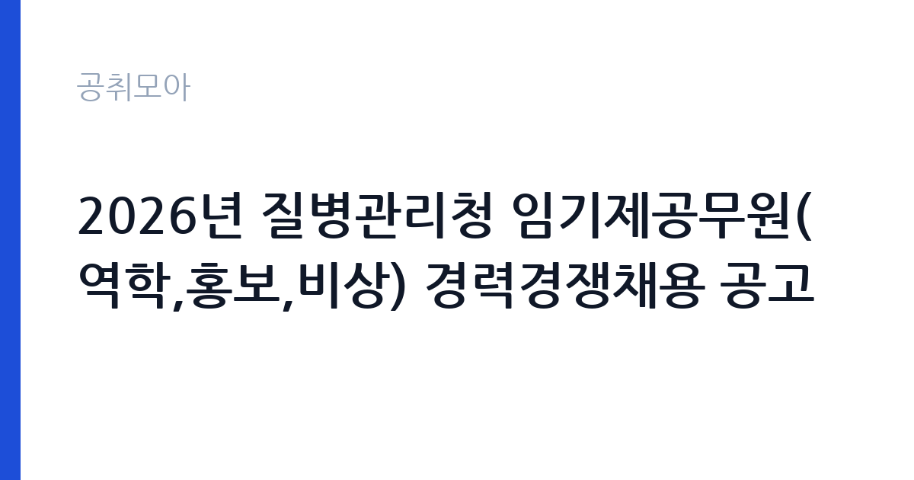

[국가기관] 2026년 질병관리청 임기제공무원(역학,홍보,비상) 경력경쟁채용 공고
질병관리청 · 부산 · 마감 2026-11-23 (D-12) · 출처 나라일터

한눈에 보는 모집 조건
| 기관 | 질병관리청 |
|---|---|
| 공고명 | 2026년 질병관리청 임기제공무원(역학,홍보,비상) 경력경쟁채용 공고 |
| 고용형태 | 임기제 |
| 근무지 | 부산 |
| 게시일 | 2026-11-11 |
| 마감일 | 2026-11-23 (D-12) |
지원자격, 이렇게 읽으세요
- 전문임기제 다급(역학) 7명 전문임기제 다급(홍보) 1명 전문임기제 라급
- 접수 ~2026-11-23 마감
- 세부 조건은 원문 공고문 확인
공고문의 응시자격은 짧게 쓰여 있지만 실제로는 세 가지를 봅니다. 첫째 결격사유 해당 여부, 둘째 자격·경력의 직무 연관성, 셋째 근무 시작 가능일입니다. 셋 중 하나라도 애매하면 원문 공고문의 세부 조항을 먼저 확인하고 지원서를 쓰세요. 특히 질병관리청 공고는 임기제 전형이라 서류에서 직무 연관 키워드(국가기관)를 명시하는 게 유리합니다.
이 공고의 포인트
'' 조건을 눈여겨보세요. 이번 질병관리청 모집에서 '전문임기제 다급(역학) 7명 전문임기제 다급(홍보) 1명 전문임기제 라급' 항목이 사실상 1차 필터 역할을 합니다. 본인이 맞는다면 지원 우선순위를 맨 위로 올리고, 아니라면 비슷한 조건의 관련 공고 3개를 함께 검토해 차선을 마련해 두세요.
전형은 어떻게 진행되나
일반적인 순서는 서류심사 통과 후 면접심사입니다. 서류에서는 직무와 연결되는 경험이 있는지, 면접에서는 그 경험을 직접 설명할 수 있는지를 봅니다. 마감일(2026-11-23) 코앞에 몰리면 원서 접수 자체가 안 될 수 있으니 최소 하루 전에 제출하세요. 제출 뒤에는 접수번호·수험표가 정상 발급됐는지 확인이 필수입니다.
원문에서 확인한 전형 방식
【질병관리청 공고 제2026-419호】 2026년 질병관리청 임기제공무원(역학,홍보,비상 분야) 경력경쟁채용 공고 질병관리청에서는 다음과 같이 우수 인재의 공직유치를 위한 국가공무원을 채용하고자 다음과 같이 공고하여 시행하오니 많은 응시 바랍니다. 2026년 11월 11일 질 병 관 리 청 장 ○ 모집분야: 감염병 역학조사, 홍보(위기소통, 온라인홍보), 행정(비상) ○ 선발직급: 전문임기제 다·라급, 일반임기제 행정9급 ○ 채용인원 : 총 10명 ○ 접수기간 : 2026.11.18.(수) 09:00~11.23.(월) 18:00 까지 - 접수방법 : 온라인 지원페이지를 통한 접수(gongmuwon.gosi.kr) * 국가공무원 채용시스템 > 국가공무원 경력경쟁채용 ○ 선발방법 : (1차)서류전형, (2차)면접시험 ○ 담당부서(연락처) : 질병관리청 운영지원과 인사계(043-719-7036)
위 내용은 질병관리청 원문 공고의 전형 항목을 그대로 옮긴 것입니다. 단계별 배수와 평가 요소가 적혀 있으니 본인 강점과 맞는 단계에 맞춰 준비 순서를 정하세요. 전형별 합격자 발표일도 원문에서 함께 확인하는 것이 좋습니다.
이런 분께 추천해요
- 부산 근무가 가능한 분 — 통근·거주 조건이 맞는지가 1순위입니다
- 임기제 전형을 찾는 분 — 국가기관 분야 관심자라면 우선 검토 대상입니다
- 마감(2026-11-23) 안에 서류를 낼 수 있는 분 — D-12이니 오늘 지원서 초안부터 잡으세요
지원 전 체크리스트
- 원문 공고문의 응시자격·결격사유 정독했는가
- 자격증·경력증명서 등 증빙 스캔 준비됐는가
- 마감일(2026-11-23) 전날까지 접수 가능한가
- 근무지(부산)·근무형태(임기제) 감당 가능한가
모집 일정과 제출 타이밍
게시일은 2026-11-11, 마감은 2026-11-23입니다. 남은 기간은 약 12일입니다. 서류 준비에 11일을 쓰고 마지막 하루는 접수·확인용으로 남겨두세요. 공공 채용은 마감일 24시간 전부터 지원자가 몰려 접수 페이지가 느려지거나 증빙 업로드가 실패하는 일이 잦습니다. 일정 운영의 정석은 이렇습니다. 첫날에는 공고문과 직무기술서를 출력해 응시자격·우대사항에 형광펜을 치고, 중간 기간에는 자기소개서 초안과 증빙 스캔을 끝내고, 마감 전날에는 접수 시스템에 미리 입력까지 마쳐 두는 것입니다. 마감 당일에 처음 접속하는 지원자가 가장 많이 탈락합니다. 접수번호가 발급되고 수험표(또는 접수확인서)가 출력돼야 접수가 끝난 것이니, 제출 후 확인증까지 꼭 챙기세요.
직무 이해하기: 국가기관
국가기관 채용은 법령상 결격사유 심사가 엄격합니다. 병역, 정년, 겸직 금지 조항을 본인 상황에 대입해 먼저 점검하세요. 보안·신원조회가 필요한 직위는 합격 후에도 탈락 사유가 될 수 있어 사전에 결격 여부를 확인하는 것이 시간을 아끼는 길입니다. 질병관리청의 이번 채용(임기제)도 같은 잣대로 보면 됩니다. 공고 제목에 적힌 분야명과 직무기술서의 필요역량을 나란히 놓고, 본인 경험에서 겹치는 키워드를 세 개 이상 뽑아보세요. 그 세 개가 자기소개서와 면접 답변의 뼈대가 됩니다.
자기소개서 작성 팁
좋은 자기소개서의 공식은 단순합니다. 지원 분야(국가기관)와의 인연 한 줄, 숫자가 박힌 경험 두 개, 입사 후 포부 한 단락입니다. 반대로 질병관리청 서류 탈락 사유 상위권은 늘 비슷합니다. 직무와 무관한 자서전식 전개, 증빙 자료와 어긋나는 주장, 마감일(2026-11-23) 실수입니다. 임기제 전형 지원자라면 채용 즉시 업무가 가능하다는 점을 글로 못 박아 두세요. 실무 투입 속도가 가산점처럼 작용합니다.
면접 준비 포인트
면접관의 질문은 두 갈래입니다. 서류 내용의 사실 관계 확인, 그리고 우리 조직에 맞을지에 대한 판단입니다. 자소서의 핵심 경험 두 개를 1분 안에 설명하는 연습을 해두고, 질병관리청의 대표 사업 하나를 지원 분야(국가기관)와 엮은 답변을 준비해 가세요. 마무리 질문에서는 근무지(부산)와 임기제 근무가 가능하다는 뜻을 간결하게 전하는 게 좋습니다. 단정한 복장, 30분 전 도착, 결론 우선 답변이 기본 수칙입니다.
급여·근무조건 읽는 법
공고문의 보수 표기는 호봉·수당·상여를 합친 기준이 아니라 기본급 기준인 경우가 많습니다. 실제 수령액은 원문의 보수·복무 조항과 동일 기관 재직자 채용 후기를 함께 봐야 가늠이 됩니다. 임기제 공고라면 계약 기간, 연장·전환 조건, 4대 보험과 퇴직금 적용 여부를 원문에서 반드시 확인하세요. 근무지(부산)가 도서·산간이거나 교대 근무가 포함된 경우에는 주거 지원·통근버스 조항도 체크리스트에 넣으세요.
자주 묻는 질문
- 경쟁률은 어느 정도로 예상되나요?
인기 기관·부산 근무 공고는 서류 경쟁률이 10대 1을 넘는 일이 흔합니다. 다만 '' 같은 조건부 전형은 실질 경쟁률이 낮아지는 경우가 많으니, 본인 조건에 맞는 공고를 고르는 것 자체가 전략입니다. - 합격자 발표는 어디서 확인하나요?
질병관리청 홈페이지 채용 게시판과 지원 시 등록한 문자·이메일로 안내됩니다. 발표일에는 접속이 폭주하니 접수번호를 미리 메모해 두세요. 예비합격자 운영 여부도 원문에서 함께 확인하는 것이 좋습니다. - 불합격하면 다음 기회는 언제인가요?
공공기관은 상·하반기 정기 채용과 수시·추가 모집이 반복됩니다. 이번 마감일(2026-11-23)을 놓쳐도 같은 기관의 다음 회차가 열리니, 공취모아의 국가기관 탭을 구독하듯 수시로 확인하세요.
함께 보면 좋은 공고
[국가기관] 2026년 제5회 대전우편집중국 기간제 우정실무원(대체인력) 수시채용 공고 — 마감 2026-11-18[국가기관] 2026년도 제5회 진도우체국 공무직 상시계약집배원 채용 공고 — 마감 2026-11-18[국가기관] 2026년도 제3회 안양우체국(과천) 주관 기간제 상시계약집배원 채용 공고 — 마감 2026-11-18출처: 나라일터 공개정보를 바탕으로 공취모아가 정리한 안내글입니다. 모집 조건·일정은 변경될 수 있으니 지원 전 반드시 원문 공고문을 확인하세요. 본 글은 정보 제공용이며 합격을 보장하지 않습니다.